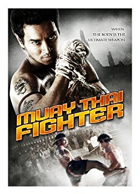

#8425 Muay Thai Chaiya - Der Körper ist die ultimative Waffe
Alternativ: Muay Thai Fighter (Englischer Titel)
 
 IMDB-Wertung: 6.3 / 10
IMDB-Wertung: 6.3 / 10  Metascore: 0
Metascore: 0 
Lifelong friends learn the traditional techniques and skills of Muay Thai Fighting that has been past down from generations. When their training camp is shut down they begin to fight underground and bring the art of Muay Thai Fighting back to life. The fighting in the ring parallels the fight for their life, when the ultimate, highly anticipated, action filled fight demonstrates to be their biggest challenge they are prepared to die for one another.
Jahr: 2007
Dauer: 116 Minuten
FSK: 18
Land: Thailand Studio: Cathay-Keris FilmsTonspuren: DD5.1 - ,
Untertitel: Deutsch,
Auflösung: 1080p (1920x1080) Größe: 11673 MB
Genre: Action, Drama
Regisseur: Kongkiat Khomsiri
Drehbuch: Kongkiat Khomsiri
Soundtrack:
Darsteller:
- Akara Amarttayakul als Piak
- Danny Arroyo als Piak
- Don Ferguson als Diamond Sullivan
- David La Haye als Carlos
- Wendy Alane Wright als Singer
- Sonthaya Chitmanee als Sa-maw
- Saengthong Gate-Uthong als Whan
- Prawit Kittichantheera als Kraengseuk
- Phreeta Kongpetch als Sriprai
- Samart Payukaroon als Thiew Chaiya
- Thawatchai Phanpakdee als Phao
 Gigi Velicitat als Jack
Gigi Velicitat als Jack
Datei: X:\FSK18-Eastern\Muay Thai Chaiya - Der Körper ist die ultimative Waffe (2007, FSK18, 1920x1080).mkv seit 02.03.2018
Festplatte: FSK18
 Es gibt insgesamt 102 Filme in der Gruppe 'FSK18-Eastern'
Es gibt insgesamt 102 Filme in der Gruppe 'FSK18-Eastern'